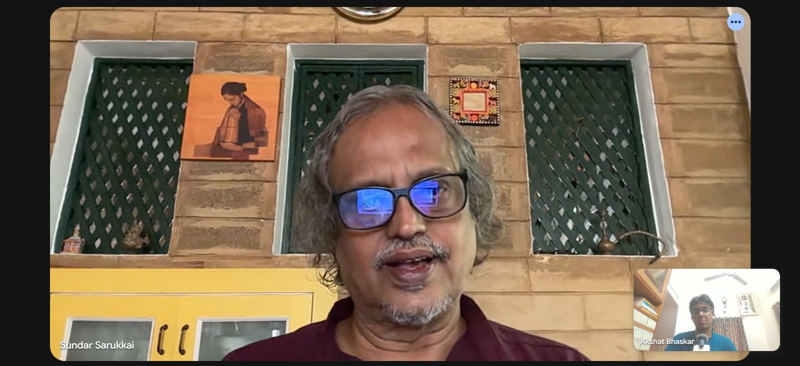

Sundar Sarukkai and Akshat Bhaskar on Philosophy for Children, Technology, and What It Means to Be Human
Philosopher and author Sundar Sarukkai on why his move from physics to philosophy was never a change of discipline, the barefoot philosophers project bringing philosophy to children in rural India, and why AI and personalized media wear down what Ambedkar called fraternity.
→